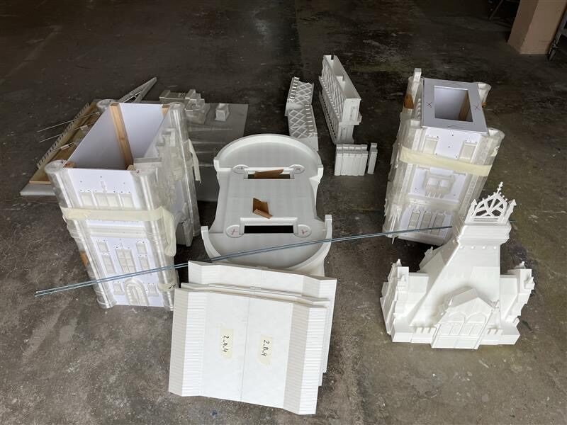
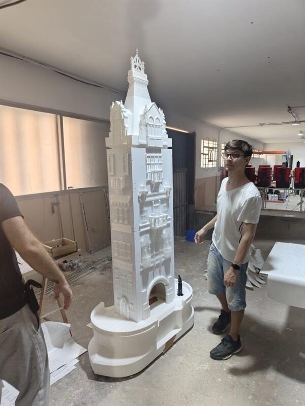
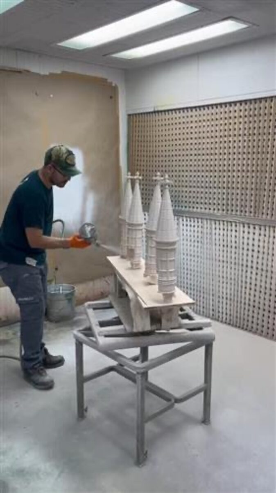
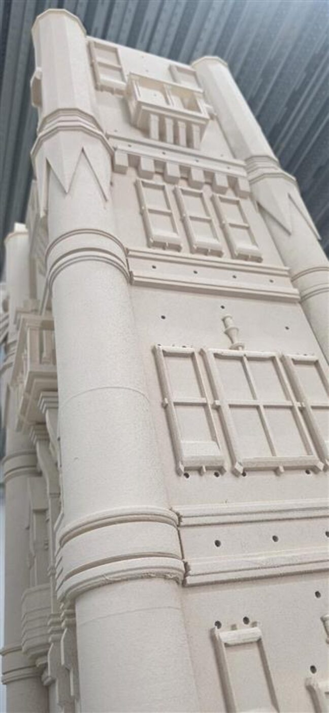
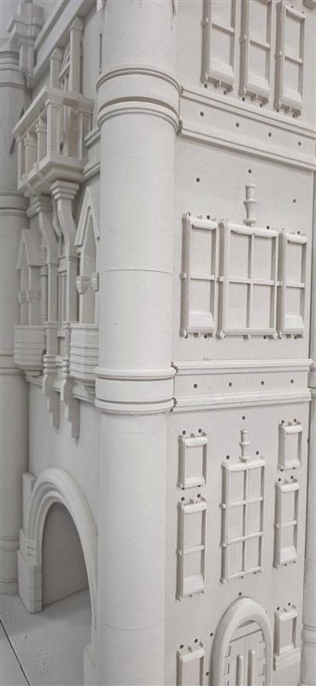
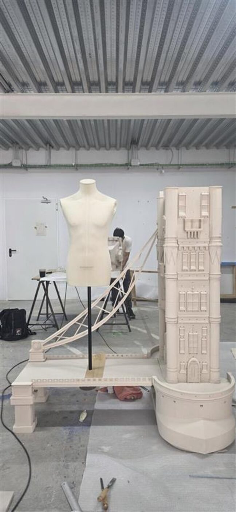

Objects / 2026
Tower Bridge at Scale
Additive manufacturing study for a Milano showroom
A rapid production study for a large-scale Tower Bridge replica, breaking landmark architecture into printable, finishable, and shippable components.
Tower Bridge at Scale was developed as an additive manufacturing and production study for a fashion showroom environment in Milano.
The problem was not simply to make a recognizable model. The bridge had to be divided into a large number of printable parts, scaled for impact, finished consistently, and planned around a compressed production window.
Prototype sections tested detail, part breakup, surface quality, and assembly logic before the full build path was priced and scheduled.
Details
- Year
2026 - Location
Milano, Italy - Category
Objects - Materials
3D printed polymer, modular assembly, painted finish study
Credits
- Client team: Acierta Retail
- Showroom context: Burberry Winter 26
Download
Index






